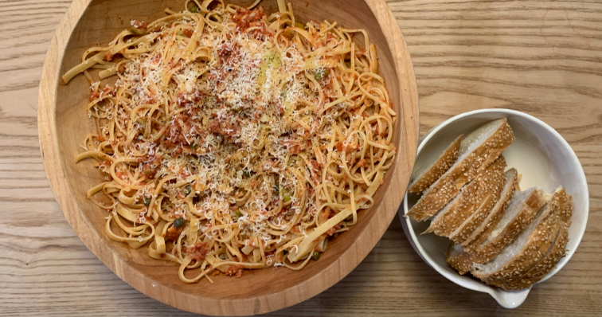

C'est Colin's Puttanesca

Ingredients
- Pasta- Linguine or Buccatini- 1 Pound
- Anchovies- 6 Fillets
- Garlic- 4 Cloves- Minced
- Tomatoes- San Marazono- Large 28 oz can
- Tomato Paste- 1 tspn
- Wine- 1 Tbsp
- Olives- 1 Cup - quartered, half green and half Moroccan or other oil cured olive
- Capers- 3 Tbsp
- Olive Oil
- Panko Bread Crumbs- 1/2 Cup
- Parsley
- Salt and Pepper to taste
Instructions
- Dice Anchovies.
- Add olive oil to hot pan.
- Add anchovies and garlic to pan and sauté until fragrant.
- Add tomato paste and wine and simmer for a few minutes.
- Add tomatoes, simmer for 10 minutes.
- Add quartered olives and capers, including a 1/2 teaspoon of caper water and cook for another 10 minutes.
- Check for salt.
- Cook Pasta.
- Toss pasta with sauce and add a glug of olive oil, pepper, and a half a cup of Panko bread crumbs.
- Shower with parmesan cheese, drizzle with olive oil, add a sprinkle of parsley, and serve.